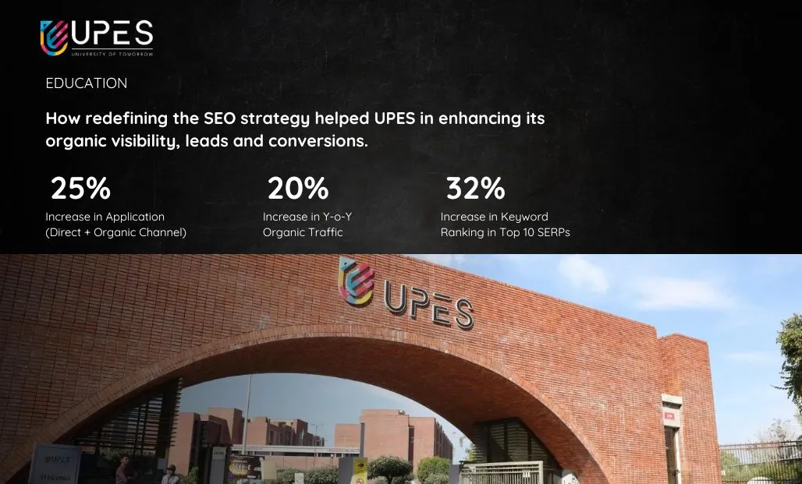
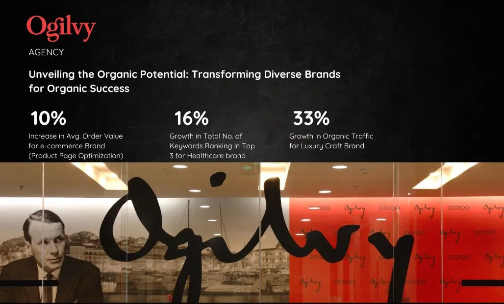

HI I AM SHALINI CHOUDHARY
SEO Expert +
SEO Expert +
Social Impact Enthusiast
I untangle the complexities of search to drive **Organic Growth** for businesses. Passionate about social change
Get Started Now8
Years of
Experience
100+
Audits
Completed
15+
Brand
Exposure
My Quality Services
Optimizing your web presence, one strategic step at a time: Witness the organic growth fueled by data-driven SEO efforts.
01.
Keyword Research & Strategy:
Unlock Organic Traffic Goldmine: Discover high-impact keywords that ignite website visits and boost customer growth. Extensive research & search trends analysis helps in identifying hidden keyword gems to craft a targeted keyword strategy.
Deep Dive Details:
Keywords are the foundation upon which a successful SEO campaign is built. But it's not just about finding popular search terms. I go beyond simple keyword research and delve into the depths of SEO strategy.
I leverage powerful research tools combined with competitor analysis to identify high-traffic, relevant keywords that perfectly align with your business goals.
This deep dive ensures your content ranks for the search terms that resonate with your target audience, attracting qualified leads and boosting conversions. I don't just find the keywords, I craft a targeted strategy that leverages them for maximum impact.
Services Process:
- Leverage cutting-edge tools to discover a treasure trove of relevant keywords.
- Analyze search intent and competitor rankings to identify the most impactful keywords.
- Build a custom keyword strategy that fits your niche and goals.
- Create a content calendar optimized for your chosen keywords, keeping you visible.
- Continuously track and refine your keyword strategy based on real-time results.
02.
On-Page Optimization:
Boost Your Search Engine Game: Get your website's technical foundation fine-tuned and content optimized to ensure search engines understand and value your brand. From crawling to code, make your website a search engine magnet.
Deep Dive Details:
Imagine your website as a storefront on a bustling street. On-page optimization is like dressing your window display to attract customers. I meticulously fine-tune the details on your website, making it crystal clear to search engines what your content is all about and why it matters.
Title tags, meta descriptions, header tags – they all become powerful tools in my arsenal to transform your website into a magnet for search engines. Through strategic on-page optimization, I boost your website's ranking for your target keywords.
The result? A surge in organic traffic and a user experience that's smooth sailing for your visitors. They'll find what they're looking for quickly and easily, leading to increased engagement and conversions.
Services Process:
- Conduct a thorough on-page SEO checkup to identify areas for improvement.
- Optimize important elements such as title tags, meta descriptions, and header tags with your business target keywords for maximum impact.
- Build a strong internal linking structure, ensuring a user-friendly experience and making it easier for search engines to crawl your site.
- Optimize image alt text with relevant keywords to help your images rank higher in search results.
- Guarantee your website is mobile-friendly and loads lightning-fast for an amazing user experience.
03.
Off-Page Optimization / Link Building:
Become a Search Authority: Build powerful backlinks that elevate your brand in the eyes of search engines and customers. We craft data-driven link-building campaigns to earn high-quality backlinks and strengthen your website's authority.
Deep Dive Details:
Imagine your website as a popular restaurant with a line out the door. Link building is like getting glowing reviews from respected food critics. Backlinks from high-authority websites act as votes of confidence in your content, signalling to search engines that your website is a valuable resource.
I leverage a variety of creative link-building strategies to secure these endorsements, from guest blogging on relevant industry sites to crafting link-worthy content that naturally attracts backlinks.
The more high-quality links you have, the higher your website climbs in search rankings, leading to more organic traffic and brand awareness.
Services Process:
- Conduct a competitive link analysis to identify link-building opportunities.
- Develop targeted outreach campaigns to acquire backlinks from high-authority websites.
- Create high-quality, link-worthy content that naturally attracts backlinks.
- Monitor your backlink profile and disavow any spammy or low-quality links.
04.
Performance Monitoring & Reporting:
SEO Made Simple: Track progress, celebrate wins, and refine your strategy with clear, actionable insights. We monitor technical SEO health, track keyword rankings, and provide data-driven reports to ensure your website thrives in the ever-evolving search landscape.
Deep Dive Details:
Data is the lifeblood of any successful SEO campaign. I don't just optimize your website and build links – I also meticulously track and analyze the results. I leverage powerful analytics tools to provide you with clear, actionable insights into your website's performance.
You'll see exactly how your SEO efforts are translating into increased traffic, conversions, and ROI.
With this data in hand, I can continuously refine your SEO strategy to maximize your website's potential and ensure you stay ahead of the curve.
Services Process:
- Set up and configure website analytics to track key SEO metrics.
- Generate comprehensive SEO reports that provide insights into website traffic, conversions, and keyword rankings.
- Analyze data to identify areas for improvement and opportunities for growth.
- Continuously monitor and adapt your SEO strategy based on data-driven insights.
My Recent Works
I put your ideas and thus your wishes in the form of a unique web project that inspires you and your customers.




Pearl Academy
Enhancing Pearl Academy's Programs Organic Visibility with Targeted Strategies.
View Case Study →My Experience
2022 - Present
Senior SEO Manager
GUS Global Services, Gurugram, India
2019 - 2022
SEO Manager
GroupM, Gurugram, India
2016 - 2019
SEO Analyst
Ogilvy & Mather, Gurugram, India
2019 - 2019
Digital Analyst
JLL, Gurugram, India
My Education & Certifications
Google Analytics Certified Expert
Google Skillshop
Technical SEO Course
LinkedIn Learning
Master of Journalism (Media Studies)
HJUJ, Rajasthan (2014 - 2016)
Bachelor of Business Administration
University of Rajasthan (2010 - 2013)
My Skills
By leveraging my comprehensive skillset, I've driven targeted traffic, boosted rankings, and ultimately fueled customer growth for brands.

Technical SEO & Audit

Competitive Analysis
SEO Strategy & Keyword Research

Content Marketing

Link Building
Analytics & Reporting
Recent Blogs
Stay ahead of the SEO curve: Uncover fresh perspectives, industry trends and expert advice on optimizing your website for success.
View All Blogs →

Let’s work together!
Let's take your search engine visibility to the next level. Get in touch!
Get in Touch!Address
DLF Phase 1, Gurugram, Haryana, India